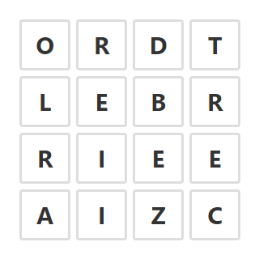
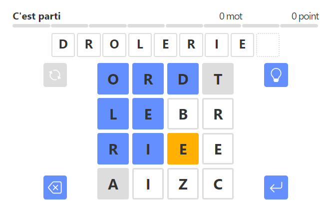

LaBOG est un jeu de mots quotidien inspiré de Boggle qui se joue à partir d'une grille de 16 lettres disposées sur un plateau de 4 cases sur 4.

L'objectif de LaBOG est de trouver le maximum de mots possibles, en reliant les cases adjacentes du plateau, soit horizontalement, soit verticalement, soit en diagonale.
Au début de la partie, 16 lettres sont placées sur la grille de jeu. Ces lettres sont identiques pour tous les joueurs et elles constituent la grille du jour. Vous disposez d'une journée entière pour participer à cette partie. Le changement de lettres a lieu à minuit UTC, ce qui en France correspond à 1 heure du matin (heure d'hiver) ou 2 heures du matin (heure d'été).
Avec ces 16 lettres, vous pouvez commencer à rechercher les mots présents dans la grille comme sur Boggle. Pour cela, vous devez former des mots en reliant les lettres adjacentes. Les cases peuvent être reliées si elles se "touchent" que ce soit horizontalement (à gauche ou à droite), verticalement (au dessus ou au dessous) ou même diagonalement. Notez qu'une case ne peut pas être utilisée plus d'une fois dans le même mot.
Pour qu'un mot soit valable, il doit respecter un certain nombre de conditions :
Les mots acceptés par LaBOG sont tous issus du dictionnaire de Grammalecte (version 7.5), à l'exception :
Par contre, les pluriels, les verbes à l'infinitif, les participes passés et les participes présents sont bien autorisés. Pour corser un peu le jeu, chaque partie quotidienne de LaBOG contient au minimum un mot de 8 ou 9 lettres !

LaBOG compte automatiquement le nombre de mots trouvés ainsi que le score que cela représente. Le fait de trouver un mot de 4 lettres rapporte 1 point. Les mots de plus de 4 lettres rapportent 1 point par lettre :
C'est le score (et pas le nombre de points) qui détermine le niveau atteint dans le jeu. Pour gagner à LaBOG, l'objectif est d'atteindre le niveau "Génial", ce qui est réalisé en réussissant à faire environ 60 % du total des points possibles.
Normalement, le niveau "Génial" est atteignable avec un bon vocabulaire "courant", sans avoir besoin de piocher dans les mots trop rares.
Théoriquement, le niveau des parties quotidiennes progresse tout au long de la semaine, en allant de la plus facile à la plus difficile :
Puis la semaine se termine en douceur avec une autre partie moyenne le dimanche.
J'espère que cette documentation vous a aidé à comprendre les règles de base pour jouer à LaBOG. Et maintenant, bonne chance et amusez-vous bien !
Michel (2023/04/19)